# bam test
library(SummarizedExperiment)
library(omicScope)
bams <- list.files("../test-bam/",pattern = "*.bam$")
bams
# [1] "0a.bam" "0a.sorted.bam" "0b.bam" "0b.sorted.bam" "10a.bam" "10a.sorted.bam" "10b.bam"
# [8] "10b.sorted.bam" "4a.bam" "4a.sorted.bam" "4b.bam" "4b.sorted.bam"
bams <- c("../test-bam/0a.sorted.bam","../test-bam/0b.sorted.bam",
"../test-bam/4a.sorted.bam","../test-bam/4b.sorted.bam",
"../test-bam/10a.sorted.bam","../test-bam/10b.sorted.bam")
mta <- data.frame(sample = bams,
sample_name = c("day0-rep1","day0-rep2","day4-rep1","day4-rep2",
"day10-rep1","day10-rep2"),
group = rep(c("day0","day4","day10"),each = 2))
mta
# sample sample_name group
# 1 ../test-bam/0a.sorted.bam day0-rep1 day0
# 2 ../test-bam/0b.sorted.bam day0-rep2 day0
# 3 ../test-bam/4a.sorted.bam day4-rep1 day4
# 4 ../test-bam/4b.sorted.bam day4-rep2 day4
# 5 ../test-bam/10a.sorted.bam day10-rep1 day10
# 6 ../test-bam/10b.sorted.bam day10-rep2 day101 Bam files example
1.1 Introduction
RNA-seq upstream analysis involves removing adapter sequences from FASTQ files, aligning reads to the reference genome, and quantifying gene expression using HTSeq or featureCounts to obtain raw read counts. omicScope directly accepts aligned BAM files as input and provides the count_data() function to perform quantification analysis on constructed omicscope objects. The generated count matrix is stored within the omicscope object, enabling subsequent downstream analyses.
1.2 Omicscope object construction
In the following example, we will construct an omicscope object using pre-aligned BAM files as input. In addition to the BAM files, sample metadata containing grouping information is required:
We construct the omicscope object using the omicscope() function. The created object inherits from the SummarizedExperiment class, allowing users to access feature metadata and sample information using standard accessor functions like rowData() and colData(), respectively:
os <- omicscope(gtfAnno = "../test-bam/Mus_musculus.GRCm38.102.gtf.gz",
bamFile = bams,
metadata = mta)
os
# class: omicscope
# dim: 55487 6
# metadata(0):
# assays(0):
# rownames(55487): ENSMUSG00000102693 ENSMUSG00000064842 ... ENSMUSG00000096730 ENSMUSG00000095742
# rowData names(3): gene_id gene_name gene_biotype
# colnames(6): ../test-bam/0a.sorted.bam ../test-bam/0b.sorted.bam ... ../test-bam/10a.sorted.bam ../test-bam/10b.sorted.bam
# colData names(3): sample sample_name group
rowData(os)
# DataFrame with 55487 rows and 3 columns
# gene_id gene_name gene_biotype
# <character> <character> <character>
# ENSMUSG00000102693 ENSMUSG00000102693 4933401J01Rik TEC
# ENSMUSG00000064842 ENSMUSG00000064842 Gm26206 snRNA
# ENSMUSG00000051951 ENSMUSG00000051951 Xkr4 protein_coding
# ENSMUSG00000102851 ENSMUSG00000102851 Gm18956 processed_pseudogene
# ENSMUSG00000103377 ENSMUSG00000103377 Gm37180 TEC
# ... ... ... ...
# ENSMUSG00000094431 ENSMUSG00000094431 CAAA01205117.1 miRNA
# ENSMUSG00000094621 ENSMUSG00000094621 CAAA01098150.1 miRNA
# ENSMUSG00000098647 ENSMUSG00000098647 CAAA01064564.1 miRNA
# ENSMUSG00000096730 ENSMUSG00000096730 Vmn2r122 protein_coding
# ENSMUSG00000095742 ENSMUSG00000095742 CAAA01147332.1 protein_coding
colData(os)
# DataFrame with 6 rows and 3 columns
# sample sample_name group
# <character> <character> <character>
# ../test-bam/0a.sorted.bam ../test-bam/0a.sorte.. day0-rep1 day0
# ../test-bam/0b.sorted.bam ../test-bam/0b.sorte.. day0-rep2 day0
# ../test-bam/4a.sorted.bam ../test-bam/4a.sorte.. day4-rep1 day4
# ../test-bam/4b.sorted.bam ../test-bam/4b.sorte.. day4-rep2 day4
# ../test-bam/10a.sorted.bam ../test-bam/10a.sort.. day10-rep1 day10
# ../test-bam/10b.sorted.bam ../test-bam/10b.sort.. day10-rep2 day101.3 Read quantification from BAM files
Read quantification can be performed using the count_data() function, which internally calls featureCounts() from the Rsubread package to process BAM files. The generated count matrix is stored in the omicscope object for downstream analysis:
os <- count_data(os, nThreads = 12)
# ========== _____ _ _ ____ _____ ______ _____
# ===== / ____| | | | _ \| __ \| ____| /\ | __ \
# ===== | (___ | | | | |_) | |__) | |__ / \ | | | |
# ==== \___ \| | | | _ <| _ /| __| / /\ \ | | | |
# ==== ____) | |__| | |_) | | \ \| |____ / ____ \| |__| |
# ========== |_____/ \____/|____/|_| \_\______/_/ \_\_____/
# Rsubread 2.22.1
#
# //========================== featureCounts setting ===========================\\
# || ||
# || Input files : 6 BAM files ||
# || ||
# || 0a.sorted.bam ||
# || 0b.sorted.bam ||
# || 4a.sorted.bam ||
# || 4b.sorted.bam ||
# || 10a.sorted.bam ||
# || 10b.sorted.bam ||
# || ||
# || Paired-end : yes ||
# || Count read pairs : yes ||
# || Annotation : Mus_musculus.GRCm38.102.gtf.gz (GTF) ||
# || Dir for temp files : . ||
# || Threads : 12 ||
# || Level : meta-feature level ||
# || Multimapping reads : counted ||
# || Multi-overlapping reads : not counted ||
# || Min overlapping bases : 1 ||
# || ||
# \\============================================================================//
#
# //================================= Running ==================================\\
# || ||
# || Load annotation file Mus_musculus.GRCm38.102.gtf.gz ... ||
# || Features : 843712 ||
# || Meta-features : 55487 ||
# || Chromosomes/contigs : 45 ||
# || ||
# || Process BAM file 0a.sorted.bam... ||
# || Paired-end reads are included. ||
# || Total alignments : 41866848 ||
# || Successfully assigned alignments : 21829320 (52.1%) ||
# || Running time : 0.80 minutes ||
# || ||
# || Process BAM file 0b.sorted.bam... ||
# || Paired-end reads are included. ||
# || Total alignments : 43090084 ||
# || Successfully assigned alignments : 21581339 (50.1%) ||
# || Running time : 0.95 minutes ||
# || ||
# || Process BAM file 4a.sorted.bam... ||
# || Paired-end reads are included. ||
# || Total alignments : 38381228 ||
# || Successfully assigned alignments : 20113520 (52.4%) ||
# || Running time : 0.70 minutes ||
# || ||
# || Process BAM file 4b.sorted.bam... ||
# || Paired-end reads are included. ||
# || Total alignments : 39379217 ||
# || Successfully assigned alignments : 20351678 (51.7%) ||
# || Running time : 0.73 minutes ||
# || ||
# || Process BAM file 10a.sorted.bam... ||
# || Paired-end reads are included. ||
# || Total alignments : 40463564 ||
# || Successfully assigned alignments : 21379392 (52.8%) ||
# || Running time : 0.71 minutes ||
# || ||
# || Process BAM file 10b.sorted.bam... ||
# || Paired-end reads are included. ||
# || Total alignments : 40481313 ||
# || Successfully assigned alignments : 19923083 (49.2%) ||
# || Running time : 0.69 minutes ||
# || ||
# || Write the final count table. ||
# || Write the read assignment summary. ||
# || ||
# \\============================================================================//Accessing count data
assay(os)[1:3,]
# 3 x 6 sparse Matrix of class "dgCMatrix"
# ../test-bam/0a.sorted.bam ../test-bam/0b.sorted.bam ../test-bam/4a.sorted.bam ../test-bam/4b.sorted.bam
# ENSMUSG00000102693 . 1 . .
# ENSMUSG00000064842 . . . .
# ENSMUSG00000051951 13 16 109 147
# ../test-bam/10a.sorted.bam ../test-bam/10b.sorted.bam
# ENSMUSG00000102693 . .
# ENSMUSG00000064842 . .
# ENSMUSG00000051951 65 1051.4 Raw count normalization
Raw count data can be normalized using the normalize_data() function, which supports several normalization methods: TPM (Transcripts Per Million), RPKM (Reads Per Kilobase Million), CPM (Counts Per Million), and log1p transformation:
os <- normalize_data(os)
assayNames(os)
# [1] "counts" "normed_counts"
assay(os,"normed_counts")[1:3,1:3]
# 3 x 3 sparse Matrix of class "dgCMatrix"
# ../test-bam/0a.sorted.bam ../test-bam/0b.sorted.bam ../test-bam/4a.sorted.bam
# ENSMUSG00000102693 . 0.1160302 .
# ENSMUSG00000064842 . . .
# ENSMUSG00000051951 0.2632322 0.3259661 2.614308
# cpm normalization
os <- normalize_data(os, norm_type = "cpm")
assay(os,"normed_counts")[1:3,1:3]
# 3 x 3 sparse Matrix of class "dgCMatrix"
# ../test-bam/0a.sorted.bam ../test-bam/0b.sorted.bam ../test-bam/4a.sorted.bam
# ENSMUSG00000102693 . 0.0004633633 .
# ENSMUSG00000064842 . . .
# ENSMUSG00000051951 0.005955293 0.0074138125 0.05419241.5 Dimensionality reduction and clustering
Principal Component Analysis (PCA) is routinely employed in RNA-seq quality control workflows to identify potential outlier samples. The run_reduction() function implements three dimensionality reduction approaches (PCA, UMAP, and t-SNE) for exploring and visualizing the relationships between samples:
os <- run_reduction(object = os, reduction = "pca")
dim_plot(os)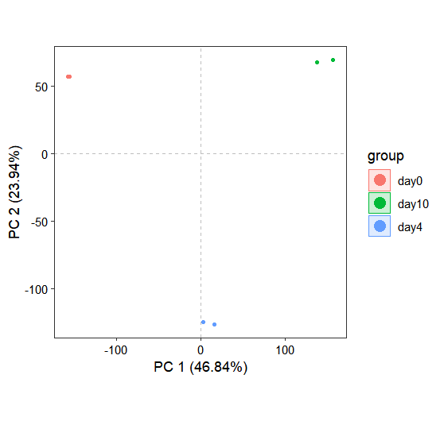
1.6 Sample correlation analysis
In addition to dimensionality reduction approaches such as PCA and UMAP for exploring sample relationships, correlation analysis provides another perspective on inter-sample associations. The correlation_plot function performs correlation analysis and produces a correlation heatmap:
library(patchwork)
os <- get_normalized_data(os)
correlation_plot(os)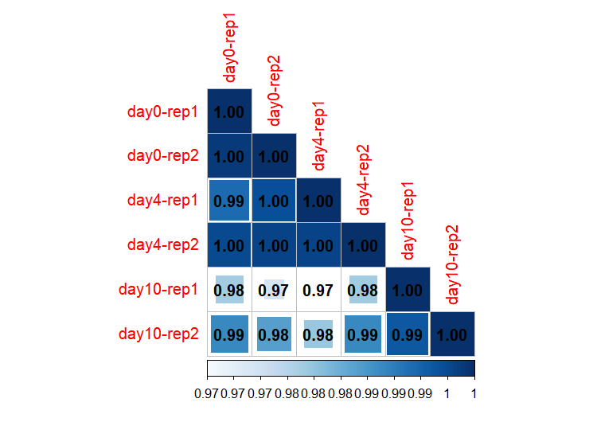
When sample names are specified for both x and y parameters, the function generates a correlation scatter plot:
p1 <- correlation_plot(os,
x = "day0-rep1",y = "day0-rep2")
p2 <- correlation_plot(os,
x = "day10-rep1",y = "day10-rep2")
p1 + p2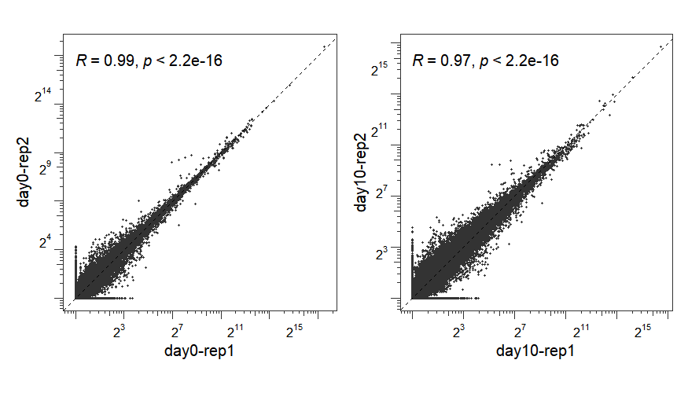
1.7 Differential expression analysis
To identify genes with differential expression patterns across various treatment conditions or sample groups, the differential_expression() function provides integrated support for three leading statistical methods: DESeq2, limma, and edgeR. This flexibility allows users to select the analytical approach that best suits their experimental design and data characteristics.
In the following analysis, we compare gene expression between day 10 and day 0 samples (with day 10 as the treatment group and day 0 as the control) using the DESeq2 method:
os <- differential_expression(os,
method = "deseq2",
selectedSample = c("day0-rep1","day0-rep2",
"day10-rep1","day10-rep2"),
deseq2Contrast = c('group', 'day10', 'day0')
)Differential expression analysis results are stored within the diffExpData slot of the omicscope object. The results are organized as a diffdata S4 object containing the following components: contrast name, statistical method used, numbers of significantly up- and down-regulated genes, user-defined thresholds for log2FoldChange and p-value, and a detailed data frame with complete differential expression statistics:
res <- os@diffExpData$deseq2$treat_vs_control
str(res)
# Formal class 'diffdata' [package "omicScope"] with 9 slots
# ..@ contrastName : chr "treat_vs_control"
# ..@ method : chr "deseq2"
# ..@ design :List of 1
# .. ..$ :Class 'formula' language ~group
# .. .. .. ..- attr(*, ".Environment")=<environment: 0x0000018b47022928>
# ..@ log2FCthreshold: num 1
# ..@ pvalueThreshold: num 0.05
# ..@ sigUp : int 6281
# ..@ sigDown : int 5352
# ..@ nonSig : int 27096
# ..@ data :'data.frame': 38729 obs. of 10 variables:
# .. ..$ gene_id : chr [1:38729] "ENSMUSG00000000001" "ENSMUSG00000000028" "ENSMUSG00000000031" "ENSMUSG00000000037" ...
# .. ..$ baseMean : num [1:38729] 3613.15 1001.61 14141.49 792.04 1.38 ...
# .. ..$ log2FoldChange: num [1:38729] 0.559 -1.608 8.344 -3.364 3.798 ...
# .. ..$ lfcSE : num [1:38729] 0.18 0.181 0.212 0.208 3.23 ...
# .. ..$ stat : num [1:38729] 3.1 -8.9 39.27 -16.2 1.18 ...
# .. ..$ pvalue : num [1:38729] 1.92e-03 5.69e-19 0.00 4.87e-59 2.40e-01 ...
# .. ..$ padj : num [1:38729] 5.35e-03 7.43e-18 0.00 3.31e-57 NA ...
# .. ..$ gene_name : chr [1:38729] "Gnai3" "Cdc45" "H19" "Scml2" ...
# .. ..$ gene_biotype : chr [1:38729] "protein_coding" "protein_coding" "lincRNA" "protein_coding" ...
# .. ..$ type : chr [1:38729] "nonSig" "sigDown" "sigUp" "sigDown" ...
head(res@data)
# gene_id baseMean log2FoldChange lfcSE stat pvalue padj gene_name gene_biotype type
# 1 ENSMUSG00000000001 3613.151868 0.5587918 0.1800792 3.103033 1.915484e-03 5.347565e-03 Gnai3 protein_coding nonSig
# 2 ENSMUSG00000000028 1001.607495 -1.6083184 0.1807529 -8.897882 5.692256e-19 7.428221e-18 Cdc45 protein_coding sigDown
# 3 ENSMUSG00000000031 14141.492563 8.3442336 0.2124597 39.274424 0.000000e+00 0.000000e+00 H19 lincRNA sigUp
# 4 ENSMUSG00000000037 792.043426 -3.3640508 0.2076300 -16.202139 4.870343e-59 3.306090e-57 Scml2 protein_coding sigDown
# 5 ENSMUSG00000000049 1.379006 3.7979399 3.2298910 1.175872 2.396458e-01 NA Apoh protein_coding nonSig
# 6 ENSMUSG00000000056 927.514232 1.5135494 0.2393950 6.322392 2.575447e-10 1.749060e-09 Narf protein_coding sigUpTo visualize the differential expression results, we use the volcano_plot() function, which generates a volcano plot displaying log2FoldChange versus statistical significance:
# plot
volcano_plot(os,
method = "deseq2",
gene_number_label_pos = c(0.95,0.02))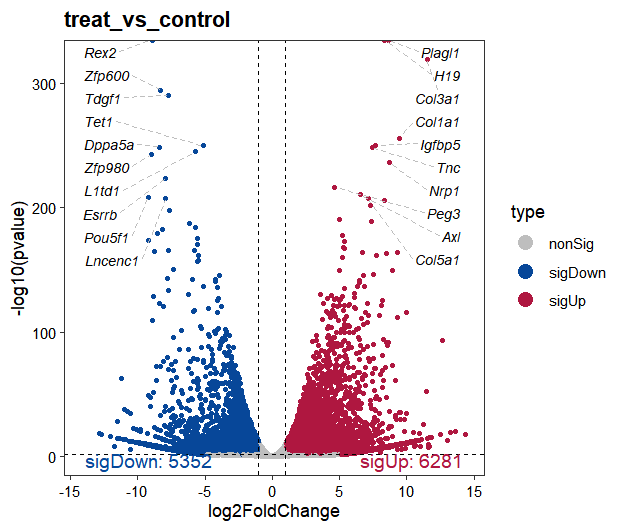
1.8 Pathway functional enrichment analysis
The run_enrichment() function performs pathway enrichment analysis separately on up- and down-regulated genes from stored differential expression results. Supported methods include “go”, “gsea_go”, “kegg”, and “gsea_kegg”, with results automatically stored in the enrichmentData slot:
library(clusterProfiler)
library(org.Mm.eg.db)
os <- run_enrichment(os,
enrich_type = "go",
OrgDb = org.Mm.eg.db,
pvalueCutoff = 0.05)
# Start for method of deseq2 and contrast for treat_vs_control enrichment analysis...
# ...
enrich.res <- os@enrichmentData$GO
str(enrich.res)
# Formal class 'SimpleList' [package "S4Vectors"] with 4 slots
# ..@ listData :List of 2
# .. ..$ deseq2|treat_vs_control|go|sigUp :Formal class 'enrichResult' [package "DOSE"] with 15 slots
# .. .. .. ..@ result :'data.frame': 4009 obs. of 13 variables:
# .. .. .. .. ..$ ONTOLOGY : chr [1:4009] "BP" "BP" "BP" "BP" ...
# .. .. .. .. ..$ ID : chr [1:4009] "GO:0030198" "GO:0045229" "GO:0043062" "GO:0042060" ...
# .. .. .. .. ..$ Description : chr [1:4009] "extracellular matrix organization" "external encapsulating structure organization" "extracellular structure organization" "wound healing" ...
# .. .. .. .. ..$ GeneRatio : chr [1:4009] "199/4736" "199/4736" "199/4736" "196/4736" ...
# .. .. .. .. ..$ BgRatio : chr [1:4009] "337/28832" "338/28832" "339/28832" "403/28832" ...
# .. .. .. .. ..$ RichFactor : num [1:4009] 0.591 0.589 0.587 0.486 0.472 ...
# .. .. .. .. ..$ FoldEnrichment: num [1:4009] 3.59 3.58 3.57 2.96 2.87 ...
# .. .. .. .. ..$ zScore : num [1:4009] 21.2 21.2 21.1 17.6 16.6 ...
# .. .. .. .. ..$ pvalue : num [1:4009] 5.40e-71 1.11e-70 2.25e-70 1.33e-51 2.40e-46 ...
# .. .. .. .. ..$ p.adjust : num [1:4009] 3.37e-67 3.45e-67 4.69e-67 2.07e-48 2.99e-43 ...
# .. .. .. .. ..$ qvalue : num [1:4009] 1.50e-67 1.54e-67 2.09e-67 9.23e-49 1.33e-43 ...
# .. .. .. .. ..$ geneID : chr [1:4009] "Postn/Col3a1/Smoc2/Nepn/Ctss/Pparg/Col1a1/Ccdc80/Col6a1/Lox/Col4a6/Adamts18/Col16a1/Col1a2/Foxf1/Adamts12/Col4a"| __truncated__ "Postn/Col3a1/Smoc2/Nepn/Ctss/Pparg/Col1a1/Ccdc80/Col6a1/Lox/Col4a6/Adamts18/Col16a1/Col1a2/Foxf1/Adamts12/Col4a"| __truncated__ "Postn/Col3a1/Smoc2/Nepn/Ctss/Pparg/Col1a1/Ccdc80/Col6a1/Lox/Col4a6/Adamts18/Col16a1/Col1a2/Foxf1/Adamts12/Col4a"| __truncated__ "F13a1/Plek/Col3a1/Smoc2/Bnc1/Svep1/Pparg/Pf4/Lilrb4a/Fgb/Tlr4/Ccl2/Itgb6/Nrp1/C1qtnf1/Muc16/Adamts18/Kng2/Mmrn1"| __truncated__ ...
# .. .. .. .. ..$ Count : int [1:4009] 199 199 199 196 185 167 212 154 173 201 ...
# .. .. .. ..@ pvalueCutoff : num 0.05
# .. .. .. ..@ pAdjustMethod: chr "BH"
# .. .. .. ..@ qvalueCutoff : num 0.2
# .. .. .. ..@ organism : chr "Mus musculus"
# .. .. .. ..@ ontology : chr "GOALL"
# .. .. .. ..@ gene : chr [1:5283] "17022" "102636514" "11576" "74145" ...
# .. .. .. ..@ keytype : chr "ENTREZID"
# .. .. .. ..@ universe : chr [1:28832] "11545" "12628" "13804" "16882" ...
# .. .. .. ..@ gene2Symbol : Named chr [1:5283] "Lum" "Hand2os1" "Afp" "F13a1" ...
# .. .. .. .. ..- attr(*, "names")= chr [1:5283] "17022" "102636514" "11576" "74145" ...
# .. .. .. ..@ geneSets :List of 15714
# .. .. .. .. ..$ GO:0000002: chr [1:37] "11545" "12628" "13804" "16882" ...
# .. .. .. .. ..$ GO:0000018: chr [1:141] "11350" "11461" "11545" "12053" ...
# .. .. .. .. ..$ GO:0000023: chr "232714"
# .. .. .. .. ..$ GO:0000025: chr "232714"
# .. .. .. .. ..$ GO:0000038: chr [1:34] "11430" "11666" "12686" "14081" ...
# .. .. .. .. ..$ GO:0000041: chr [1:110] "11306" "11776" "11927" "11977" ...
# .. .. .. .. ..$ GO:0000045: chr [1:128] "11781" "11793" "11938" "12421" ...
# .. .. .. .. ..$ GO:0000050: chr [1:11] "11846" "11847" "11898" "12606" ...
# .. .. .. .. ..$ GO:0000052: chr [1:7] "11898" "15194" "18416" "56454" ...
# .. .. .. .. ..$ GO:0000070: chr [1:189] "11789" "11799" "11848" "11920" ...
# .. .. .. .. ..$ GO:0000075: chr [1:205] "11789" "11799" "11909" "11920" ...
# .. .. .. .. ..$ GO:0000077: chr [1:121] "11909" "11920" "12021" "12144" ...
# .. .. .. .. ..$ GO:0000079: chr [1:45] "11491" "11651" "11789" "11819" ...
# .. .. .. .. ..$ GO:0000082: chr [1:223] "11461" "11477" "11479" "11491" ...
# .. .. .. .. ..$ GO:0000086: chr [1:144] "11799" "11820" "11920" "12021" ...
# .. .. .. .. ..$ GO:0000096: chr [1:32] "11611" "11720" "12116" "12286" ...
# .. .. .. .. ..$ GO:0000097: chr [1:16] "12116" "12411" "14598" "17769" ...
# .. .. .. .. ..$ GO:0000098: chr [1:7] "11611" "11720" "12411" "12583" ...
# .. .. .. .. ..$ GO:0000101: chr [1:13] "17254" "18023" "20510" "20511" ...
# .. .. .. .. ..$ GO:0000103: chr [1:4] "23971" "23972" "53315" "54200"
# .. .. .. .. ..$ GO:0000105: chr [1:2] "108156" "665563"
# .. .. .. .. ..$ GO:0000122: chr [1:984] "11481" "11545" "11568" "11569" ...
# .. .. .. .. ..$ GO:0000132: chr [1:38] "12615" "13191" "13589" "14165" ...
# .. .. .. .. ..$ GO:0000154: chr [1:32] "14113" "14791" "15278" "52530" ...
# .. .. .. .. ..$ GO:0000165: chr [1:850] "11350" "11352" "11441" "11450" ...
# .. .. .. .. ..$ GO:0000183: chr [1:9] "18676" "20937" "64383" "93759" ...
# .. .. .. .. ..$ GO:0000184: chr [1:48] "11810" "14852" "14853" "15384" ...
# .. .. .. .. ..$ GO:0000209: chr [1:272] "11796" "11797" "11798" "12005" ...
# .. .. .. .. ..$ GO:0000212: chr [1:25] "12316" "12442" "13194" "17451" ...
# .. .. .. .. ..$ GO:0000226: chr [1:688] "11350" "11603" "11735" "11789" ...
# .. .. .. .. ..$ GO:0000245: chr [1:50] "13046" "14007" "14105" "19655" ...
# .. .. .. .. ..$ GO:0000266: chr [1:52] "11774" "12176" "13179" "14245" ...
# .. .. .. .. ..$ GO:0000271: chr [1:67] "11364" "11651" "11652" "11771" ...
# .. .. .. .. ..$ GO:0000272: chr [1:40] "11548" "11554" "12421" "12655" ...
# .. .. .. .. ..$ GO:0000278: chr [1:894] "11350" "11461" "11477" "11479" ...
# .. .. .. .. ..$ GO:0000280: chr [1:466] "11789" "11799" "11848" "11920" ...
# .. .. .. .. ..$ GO:0000281: chr [1:93] "11735" "11789" "11799" "11840" ...
# .. .. .. .. ..$ GO:0000288: chr [1:52] "11991" "12192" "12193" "12227" ...
# .. .. .. .. ..$ GO:0000289: chr [1:26] "12227" "17350" "18458" "18983" ...
# .. .. .. .. ..$ GO:0000302: chr [1:226] "11350" "11502" "11517" "11545" ...
# .. .. .. .. ..$ GO:0000303: chr [1:26] "11545" "11808" "11977" "12460" ...
# .. .. .. .. ..$ GO:0000304: chr "14360"
# .. .. .. .. ..$ GO:0000305: chr [1:27] "11545" "11808" "11977" "12460" ...
# .. .. .. .. ..$ GO:0000375: chr [1:315] "11758" "11834" "12261" "12696" ...
# .. .. .. .. ..$ GO:0000377: chr [1:315] "11758" "11834" "12261" "12696" ...
# .. .. .. .. ..$ GO:0000380: chr [1:84] "13046" "13207" "13211" "13548" ...
# .. .. .. .. ..$ GO:0000381: chr [1:63] "13046" "13207" "13548" "13992" ...
# .. .. .. .. ..$ GO:0000394: chr [1:11] "28088" "66078" "66637" "67106" ...
# .. .. .. .. ..$ GO:0000395: chr [1:6] "20630" "101739" "110809" "231769" ...
# .. .. .. .. ..$ GO:0000398: chr [1:315] "11758" "11834" "12261" "12696" ...
# .. .. .. .. ..$ GO:0000413: chr [1:14] "18087" "19035" "19038" "23988" ...
# .. .. .. .. ..$ GO:0000422: chr [1:106] "11739" "11740" "11793" "11983" ...
# .. .. .. .. ..$ GO:0000423: chr [1:89] "11739" "11740" "11793" "11983" ...
# .. .. .. .. ..$ GO:0000425: chr [1:11] "11920" "12421" "18412" "19302" ...
# .. .. .. .. ..$ GO:0000578: chr [1:46] "12387" "12667" "12705" "12808" ...
# .. .. .. .. ..$ GO:0000712: chr [1:17] "17350" "20892" "21973" "21974" ...
# .. .. .. .. ..$ GO:0000723: chr [1:156] "11545" "11792" "11920" "11991" ...
# .. .. .. .. ..$ GO:0000724: chr [1:178] "11350" "11461" "11545" "11920" ...
# .. .. .. .. ..$ GO:0000725: chr [1:183] "11350" "11461" "11545" "11920" ...
# .. .. .. .. ..$ GO:0000731: chr [1:37] "12581" "18538" "18968" "18971" ...
# .. .. .. .. ..$ GO:0000768: chr [1:70] "11501" "11502" "12292" "12334" ...
# .. .. .. .. ..$ GO:0000819: chr [1:229] "11461" "11789" "11799" "11848" ...
# .. .. .. .. ..$ GO:0000820: chr [1:7] "11789" "12752" "16467" "20186" ...
# .. .. .. .. ..$ GO:0000821: chr [1:4] "12752" "14194" "20540" "381290"
# .. .. .. .. ..$ GO:0000902: chr [1:1151] "11308" "11350" "11352" "11423" ...
# .. .. .. .. ..$ GO:0000910: chr [1:187] "11735" "11744" "11789" "11799" ...
# .. .. .. .. ..$ GO:0000912: chr [1:9] "13605" "18571" "18810" "20166" ...
# .. .. .. .. ..$ GO:0000915: chr [1:9] "13605" "18571" "18810" "20166" ...
# .. .. .. .. ..$ GO:0000956: chr [1:124] "11810" "11920" "11991" "12192" ...
# .. .. .. .. ..$ GO:0001100: chr "66214"
# .. .. .. .. ..$ GO:0001101: chr [1:267] "11827" "11898" "11977" "11991" ...
# .. .. .. .. ..$ GO:0001408: chr [1:10] "20509" "27416" "30936" "56392" ...
# .. .. .. .. ..$ GO:0001501: chr [1:591] "11432" "11433" "11474" "11480" ...
# .. .. .. .. ..$ GO:0001502: chr [1:22] "11595" "12023" "12167" "12814" ...
# .. .. .. .. ..$ GO:0001503: chr [1:511] "11423" "11474" "11477" "11480" ...
# .. .. .. .. ..$ GO:0001504: chr [1:45] "11820" "13162" "13340" "13489" ...
# .. .. .. .. ..$ GO:0001508: chr [1:186] "11435" "11438" "11441" "11444" ...
# .. .. .. .. ..$ GO:0001510: chr [1:69] "11651" "13434" "14113" "14791" ...
# .. .. .. .. ..$ GO:0001516: chr [1:33] "11998" "13614" "13615" "16149" ...
# .. .. .. .. ..$ GO:0001519: chr "18484"
# .. .. .. .. ..$ GO:0001523: chr [1:79] "11304" "11522" "11529" "11532" ...
# .. .. .. .. ..$ GO:0001525: chr [1:588] "11350" "11421" "11465" "11477" ...
# .. .. .. .. ..$ GO:0001539: chr [1:260] "11441" "11497" "11500" "11642" ...
# .. .. .. .. ..$ GO:0001541: chr [1:82] "11516" "11600" "11622" "11705" ...
# .. .. .. .. ..$ GO:0001542: chr [1:15] "11504" "11576" "11606" "13615" ...
# .. .. .. .. ..$ GO:0001543: chr [1:3] "11606" "13615" "268903"
# .. .. .. .. ..$ GO:0001545: chr [1:3] "14309" "20779" "74434"
# .. .. .. .. ..$ GO:0001547: chr [1:13] "12167" "13874" "13982" "14453" ...
# .. .. .. .. ..$ GO:0001549: chr [1:2] "18159" "230103"
# .. .. .. .. ..$ GO:0001550: chr [1:4] "12167" "13874" "19288" "21930"
# .. .. .. .. ..$ GO:0001553: chr [1:17] "12394" "14366" "14566" "16323" ...
# .. .. .. .. ..$ GO:0001554: chr [1:5] "12366" "12367" "18128" "20564" ...
# .. .. .. .. ..$ GO:0001556: chr [1:40] "12173" "12190" "12531" "13164" ...
# .. .. .. .. ..$ GO:0001558: chr [1:456] "11350" "11426" "11479" "11482" ...
# .. .. .. .. ..$ GO:0001560: chr [1:3] "214384" "235036" "668303"
# .. .. .. .. ..$ GO:0001561: chr [1:6] "15112" "16922" "26458" "56794" ...
# .. .. .. .. ..$ GO:0001562: chr [1:47] "11846" "12051" "12183" "12493" ...
# .. .. .. .. ..$ GO:0001568: chr [1:808] "11350" "11421" "11465" "11475" ...
# .. .. .. .. ..$ GO:0001569: chr [1:45] "11350" "11477" "11600" "11622" ...
# .. .. .. .. .. [list output truncated]
# .. .. .. ..@ readable : logi TRUE
# .. .. .. ..@ termsim : num[0 , 0 ]
# .. .. .. ..@ method : chr(0)
# .. .. .. ..@ dr : list()
# .. ..$ deseq2|treat_vs_control|go|sigDown:Formal class 'enrichResult' [package "DOSE"] with 15 slots
# .. .. .. ..@ result :'data.frame': 1455 obs. of 13 variables:
# .. .. .. .. ..$ ONTOLOGY : chr [1:1455] "BP" "BP" "BP" "BP" ...
# .. .. .. .. ..$ ID : chr [1:1455] "GO:0022613" "GO:0042254" "GO:0016072" "GO:0006364" ...
# .. .. .. .. ..$ Description : chr [1:1455] "ribonucleoprotein complex biogenesis" "ribosome biogenesis" "rRNA metabolic process" "rRNA processing" ...
# .. .. .. .. ..$ GeneRatio : chr [1:1455] "266/3534" "196/3534" "152/3534" "138/3534" ...
# .. .. .. .. ..$ BgRatio : chr [1:1455] "454/28832" "320/28832" "256/28832" "215/28832" ...
# .. .. .. .. ..$ RichFactor : num [1:1455] 0.586 0.613 0.594 0.642 0.412 ...
# .. .. .. .. ..$ FoldEnrichment: num [1:1455] 4.78 5 4.84 5.24 3.36 ...
# .. .. .. .. ..$ zScore : num [1:1455] 30.3 26.9 23.1 23.3 18.6 ...
# .. .. .. .. ..$ pvalue : num [1:1455] 1.03e-124 1.02e-96 2.21e-72 4.40e-72 4.34e-53 ...
# .. .. .. .. ..$ p.adjust : num [1:1455] 6.21e-121 3.10e-93 4.45e-69 6.66e-69 5.25e-50 ...
# .. .. .. .. ..$ qvalue : num [1:1455] 5.02e-121 2.50e-93 3.60e-69 5.38e-69 4.24e-50 ...
# .. .. .. .. ..$ geneID : chr [1:1455] "Eif3c/Rpp30/Snrpb/Rpl13a/Rpl38/Ddx28/Eif6/Rps11/Rps25/Rps7/Prpf19/Ythdc1/Exosc8/Rps6-ps4/Rps24/Rpl35a/Srsf10/Us"| __truncated__ "Rpp30/Rpl38/Ddx28/Eif6/Rps11/Rps25/Rps7/Exosc8/Rps6-ps4/Rps24/Rpl35a/Usp36/Rps15/Utp3/Rpsa/Rplp0/Ngrn/Rpl14/Rps"| __truncated__ "Rpp30/Trir/Eif6/Rps25/Rps7/Exosc8/Rps6-ps4/Rps24/Rpl35a/Usp36/Rps15/Utp3/Rpl14/Utp25/Tfb1m/Ercc3/Exosc10/Myg1/M"| __truncated__ "Rpp30/Eif6/Rps25/Rps7/Exosc8/Rps6-ps4/Rps24/Rpl35a/Usp36/Rps15/Utp3/Rpl14/Utp25/Tfb1m/Exosc10/Myg1/Mrm3/Mettl5/"| __truncated__ ...
# .. .. .. .. ..$ Count : int [1:1455] 266 196 152 138 179 186 123 152 125 144 ...
# .. .. .. ..@ pvalueCutoff : num 0.05
# .. .. .. ..@ pAdjustMethod: chr "BH"
# .. .. .. ..@ qvalueCutoff : num 0.2
# .. .. .. ..@ organism : chr "Mus musculus"
# .. .. .. ..@ ontology : chr "GOALL"
# .. .. .. ..@ gene : chr [1:4556] "56347" "70238" "22278" "20713" ...
# .. .. .. ..@ keytype : chr "ENTREZID"
# .. .. .. ..@ universe : chr [1:28832] "11545" "12628" "13804" "16882" ...
# .. .. .. ..@ gene2Symbol : Named chr [1:4556] "Eif3c" "Rnf168" "Usf1" "Serpini1" ...
# .. .. .. .. ..- attr(*, "names")= chr [1:4556] "56347" "70238" "22278" "20713" ...
# .. .. .. ..@ geneSets :List of 13974
# .. .. .. .. ..$ GO:0000002: chr [1:37] "11545" "12628" "13804" "16882" ...
# .. .. .. .. ..$ GO:0000012: chr [1:14] "11545" "14211" "21958" "22064" ...
# .. .. .. .. ..$ GO:0000017: chr [1:2] "20537" "246787"
# .. .. .. .. ..$ GO:0000018: chr [1:141] "11350" "11461" "11545" "12053" ...
# .. .. .. .. ..$ GO:0000019: chr [1:7] "12144" "13871" "17350" "19360" ...
# .. .. .. .. ..$ GO:0000022: chr [1:10] "11799" "16319" "16571" "20877" ...
# .. .. .. .. ..$ GO:0000027: chr [1:18] "12181" "16418" "17725" "59014" ...
# .. .. .. .. ..$ GO:0000028: chr [1:22] "14109" "16785" "17724" "19090" ...
# .. .. .. .. ..$ GO:0000038: chr [1:34] "11430" "11666" "12686" "14081" ...
# .. .. .. .. ..$ GO:0000041: chr [1:110] "11306" "11776" "11927" "11977" ...
# .. .. .. .. ..$ GO:0000045: chr [1:128] "11781" "11793" "11938" "12421" ...
# .. .. .. .. ..$ GO:0000050: chr [1:11] "11846" "11847" "11898" "12606" ...
# .. .. .. .. ..$ GO:0000052: chr [1:7] "11898" "15194" "18416" "56454" ...
# .. .. .. .. ..$ GO:0000053: chr [1:2] "11898" "109900"
# .. .. .. .. ..$ GO:0000054: chr [1:17] "16418" "18148" "19069" "19384" ...
# .. .. .. .. ..$ GO:0000055: chr [1:8] "18148" "19069" "19384" "97112" ...
# .. .. .. .. ..$ GO:0000056: chr [1:8] "18148" "19069" "19384" "20054" ...
# .. .. .. .. ..$ GO:0000070: chr [1:189] "11789" "11799" "11848" "11920" ...
# .. .. .. .. ..$ GO:0000075: chr [1:205] "11789" "11799" "11909" "11920" ...
# .. .. .. .. ..$ GO:0000076: chr [1:18] "15574" "18392" "19356" "19367" ...
# .. .. .. .. ..$ GO:0000077: chr [1:121] "11909" "11920" "12021" "12144" ...
# .. .. .. .. ..$ GO:0000079: chr [1:45] "11491" "11651" "11789" "11819" ...
# .. .. .. .. ..$ GO:0000080: chr "320558"
# .. .. .. .. ..$ GO:0000082: chr [1:223] "11461" "11477" "11479" "11491" ...
# .. .. .. .. ..$ GO:0000085: chr "50883"
# .. .. .. .. ..$ GO:0000086: chr [1:144] "11799" "11820" "11920" "12021" ...
# .. .. .. .. ..$ GO:0000087: chr [1:2] "18023" "107995"
# .. .. .. .. ..$ GO:0000089: chr [1:2] "18023" "107995"
# .. .. .. .. ..$ GO:0000096: chr [1:32] "11611" "11720" "12116" "12286" ...
# .. .. .. .. ..$ GO:0000097: chr [1:16] "12116" "12411" "14598" "17769" ...
# .. .. .. .. ..$ GO:0000098: chr [1:7] "11611" "11720" "12411" "12583" ...
# .. .. .. .. ..$ GO:0000101: chr [1:13] "17254" "18023" "20510" "20511" ...
# .. .. .. .. ..$ GO:0000105: chr [1:2] "108156" "665563"
# .. .. .. .. ..$ GO:0000122: chr [1:984] "11481" "11545" "11568" "11569" ...
# .. .. .. .. ..$ GO:0000132: chr [1:38] "12615" "13191" "13589" "14165" ...
# .. .. .. .. ..$ GO:0000154: chr [1:32] "14113" "14791" "15278" "52530" ...
# .. .. .. .. ..$ GO:0000160: chr "18103"
# .. .. .. .. ..$ GO:0000165: chr [1:850] "11350" "11352" "11441" "11450" ...
# .. .. .. .. ..$ GO:0000183: chr [1:9] "18676" "20937" "64383" "93759" ...
# .. .. .. .. ..$ GO:0000184: chr [1:48] "11810" "14852" "14853" "15384" ...
# .. .. .. .. ..$ GO:0000209: chr [1:272] "11796" "11797" "11798" "12005" ...
# .. .. .. .. ..$ GO:0000212: chr [1:25] "12316" "12442" "13194" "17451" ...
# .. .. .. .. ..$ GO:0000226: chr [1:688] "11350" "11603" "11735" "11789" ...
# .. .. .. .. ..$ GO:0000237: chr [1:6] "17350" "21749" "22210" "22596" ...
# .. .. .. .. ..$ GO:0000239: chr [1:4] "57746" "57749" "110957" "671232"
# .. .. .. .. ..$ GO:0000244: chr [1:11] "19134" "22258" "27756" "28000" ...
# .. .. .. .. ..$ GO:0000245: chr [1:50] "13046" "14007" "14105" "19655" ...
# .. .. .. .. ..$ GO:0000255: chr [1:13] "11486" "14544" "18950" "22262" ...
# .. .. .. .. ..$ GO:0000266: chr [1:52] "11774" "12176" "13179" "14245" ...
# .. .. .. .. ..$ GO:0000271: chr [1:67] "11364" "11651" "11652" "11771" ...
# .. .. .. .. ..$ GO:0000272: chr [1:40] "11548" "11554" "12421" "12655" ...
# .. .. .. .. ..$ GO:0000278: chr [1:894] "11350" "11461" "11477" "11479" ...
# .. .. .. .. ..$ GO:0000279: chr [1:15] "14841" "17350" "18023" "21749" ...
# .. .. .. .. ..$ GO:0000280: chr [1:466] "11789" "11799" "11848" "11920" ...
# .. .. .. .. ..$ GO:0000281: chr [1:93] "11735" "11789" "11799" "11840" ...
# .. .. .. .. ..$ GO:0000288: chr [1:52] "11991" "12192" "12193" "12227" ...
# .. .. .. .. ..$ GO:0000289: chr [1:26] "12227" "17350" "18458" "18983" ...
# .. .. .. .. ..$ GO:0000290: chr [1:12] "12457" "18983" "53872" "67207" ...
# .. .. .. .. ..$ GO:0000292: chr "83703"
# .. .. .. .. ..$ GO:0000302: chr [1:226] "11350" "11502" "11517" "11545" ...
# .. .. .. .. ..$ GO:0000303: chr [1:26] "11545" "11808" "11977" "12460" ...
# .. .. .. .. ..$ GO:0000305: chr [1:27] "11545" "11808" "11977" "12460" ...
# .. .. .. .. ..$ GO:0000320: chr [1:5] "12443" "12449" "17869" "17986" ...
# .. .. .. .. ..$ GO:0000338: chr [1:11] "12848" "26572" "26754" "26891" ...
# .. .. .. .. ..$ GO:0000349: chr [1:2] "67439" "72886"
# .. .. .. .. ..$ GO:0000350: chr [1:2] "57905" "67229"
# .. .. .. .. ..$ GO:0000375: chr [1:315] "11758" "11834" "12261" "12696" ...
# .. .. .. .. ..$ GO:0000377: chr [1:315] "11758" "11834" "12261" "12696" ...
# .. .. .. .. ..$ GO:0000379: chr [1:3] "66078" "76265" "381802"
# .. .. .. .. ..$ GO:0000380: chr [1:84] "13046" "13207" "13211" "13548" ...
# .. .. .. .. ..$ GO:0000381: chr [1:63] "13046" "13207" "13548" "13992" ...
# .. .. .. .. ..$ GO:0000387: chr [1:37] "12729" "12812" "19134" "20595" ...
# .. .. .. .. ..$ GO:0000388: chr "320632"
# .. .. .. .. ..$ GO:0000389: chr [1:2] "57905" "193116"
# .. .. .. .. ..$ GO:0000393: chr [1:5] "57905" "67229" "67439" "72886" ...
# .. .. .. .. ..$ GO:0000394: chr [1:11] "28088" "66078" "66637" "67106" ...
# .. .. .. .. ..$ GO:0000395: chr [1:6] "20630" "101739" "110809" "231769" ...
# .. .. .. .. ..$ GO:0000398: chr [1:315] "11758" "11834" "12261" "12696" ...
# .. .. .. .. ..$ GO:0000413: chr [1:14] "18087" "19035" "19038" "23988" ...
# .. .. .. .. ..$ GO:0000422: chr [1:106] "11739" "11740" "11793" "11983" ...
# .. .. .. .. ..$ GO:0000423: chr [1:89] "11739" "11740" "11793" "11983" ...
# .. .. .. .. ..$ GO:0000425: chr [1:11] "11920" "12421" "18412" "19302" ...
# .. .. .. .. ..$ GO:0000429: chr [1:8] "17977" "18519" "21428" "22278" ...
# .. .. .. .. ..$ GO:0000430: chr [1:7] "18519" "21428" "22278" "22282" ...
# .. .. .. .. ..$ GO:0000432: chr [1:6] "18519" "21428" "22278" "22282" ...
# .. .. .. .. ..$ GO:0000436: chr [1:7] "17977" "18519" "21428" "22278" ...
# .. .. .. .. ..$ GO:0000447: chr [1:8] "30946" "59014" "59028" "66481" ...
# .. .. .. .. ..$ GO:0000448: chr [1:3] "12181" "18148" "74035"
# .. .. .. .. ..$ GO:0000451: chr [1:2] "67390" "217038"
# .. .. .. .. ..$ GO:0000454: chr [1:5] "52530" "66181" "68147" "234344" ...
# .. .. .. .. ..$ GO:0000455: chr [1:4] "68327" "106707" "245474" "271842"
# .. .. .. .. ..$ GO:0000460: chr [1:33] "12181" "16418" "18148" "19090" ...
# .. .. .. .. ..$ GO:0000461: chr "66481"
# .. .. .. .. ..$ GO:0000462: chr [1:33] "13871" "20055" "20085" "20116" ...
# .. .. .. .. ..$ GO:0000463: chr [1:18] "12181" "18148" "19989" "52202" ...
# .. .. .. .. ..$ GO:0000466: chr [1:22] "12181" "18148" "30946" "50911" ...
# .. .. .. .. ..$ GO:0000467: chr [1:7] "50911" "50912" "66362" "66446" ...
# .. .. .. .. ..$ GO:0000470: chr [1:27] "12181" "16418" "18148" "19989" ...
# .. .. .. .. ..$ GO:0000472: chr [1:3] "30946" "67842" "213773"
# .. .. .. .. .. [list output truncated]
# .. .. .. ..@ readable : logi TRUE
# .. .. .. ..@ termsim : num[0 , 0 ]
# .. .. .. ..@ method : chr(0)
# .. .. .. ..@ dr : list()
# ..@ elementType : chr "ANY"
# ..@ elementMetadata: NULL
# ..@ metadata : list()The output contains separate enrichResult objects for up-regulated and down-regulated gene sets. These objects are compatible with the enrichplot package, allowing direct visualization of enrichment results:
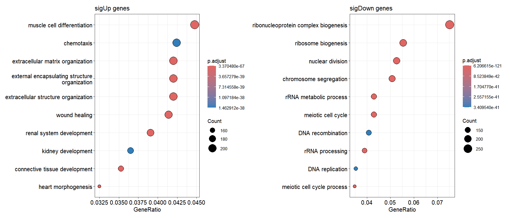
GSEA analysis can be performed, and the results are stored in the enrichmentData slot:
os <- run_enrichment(os,
enrich_type = "gsea_kegg",
organism = "mmu",
OrgDb = org.Mm.eg.db,
pvalueCutoff = 0.05)
# Start for method of deseq2 and contrast for treat_vs_control enrichment analysis...
# 'select()' returned 1:1 mapping between keys and columns
# using 'fgsea' for GSEA analysis, please cite Korotkevich et al (2019).
#
# preparing geneSet collections...
# GSEA analysis...
# leading edge analysis...
# done...
enrich.res <- os@enrichmentData$GSEA_KEGG
enrich.res$`deseq2|treat_vs_control|gsea_kegg` |> head()
# ID Description setSize enrichmentScore NES pvalue p.adjust
# mmu04512 mmu04512 ECM-receptor interaction 86 0.6691084 2.467768 1e-10 3.136364e-09
# mmu04061 mmu04061 Viral protein interaction with cytokine and cytokine receptor 87 0.6656097 2.454405 1e-10 3.136364e-09
# mmu04820 mmu04820 Cytoskeleton in muscle cells 231 0.5735884 2.405003 1e-10 3.136364e-09
# mmu05146 mmu05146 Amoebiasis 101 0.6289523 2.388869 1e-10 3.136364e-09
# mmu04510 mmu04510 Focal adhesion 199 0.5753364 2.379325 1e-10 3.136364e-09
# mmu04060 mmu04060 Cytokine-cytokine receptor interaction 262 0.5370025 2.282545 1e-10 3.136364e-09
# qvalue rank leading_edge
# mmu04512 1.69378e-09 4874 tags=55%, list=16%, signal=46%
# mmu04061 1.69378e-09 3024 tags=45%, list=10%, signal=40%
# mmu04820 1.69378e-09 4874 tags=44%, list=16%, signal=37%
# mmu05146 1.69378e-09 3521 tags=37%, list=12%, signal=32%
# mmu04510 1.69378e-09 5017 tags=36%, list=17%, signal=30%
# mmu04060 1.69378e-09 6917 tags=49%, list=23%, signal=38%
# core_enrichment
# mmu04512 Col6a3/Col1a1/Col6a1/Col4a6/Itgb6/Frem1/Col1a2/Col4a5/Tnc/Col6a2/Cd44/Col9a1/Vtn/Gp6/Itga4/Itga2/Lamc3/Thbs1/Lama4/Gp9/Lama2/Itgb3/Itga8/Cd36/Cd47/Fras1/Itgb8/Col4a3/Col4a2/Npnt/Col9a2/Reln/Col4a1/Thbs4/Sv2b/Thbs2/Lamc2/Lamb3/Itga2b/Lamb2/Col6a6/Itga7/Itga1/Col2a1/Itgb5/Comp/Fn1
# mmu04061 Pf4/Ccl9/Ccl2/Ccl7/Ppbp/Csf1r/Cxcr2/Il10ra/Ccr1/Cx3cr1/Ccl12/Tnf/Il2rb/Il18rap/Ccr5/Csf1/Cxcl12/Ccr2/Il18/Cxcl13/Il24/Tnfrsf14/Ackr3/Cxcl5/Tnfsf14/Cxcl1/Il10rb/Ccl3/Il19/Cx3cl1/Il6ra/Ccr1l1/Ccl6/Cxcr4/Ccl4/Ccl24/Cxcl11/Tnfrsf1a/Ccl17
# mmu04820 Col3a1/Col6a3/Trim55/Dcn/Col1a1/Csrp3/Col6a1/Tnnt2/Col4a6/Itgb6/Tnni1/Actg2/Col1a2/Myh7/Col4a5/Tnni2/Fbln2/Col5a1/Col6a2/Myh6/Col5a2/Fhl2/Tnnt3/Myl3/Col11a1/Daam2/Mybpc3/Col9a1/Actc1/Myoz2/Sspn/Ankrd1/Itga4/Itga2/Tcap/Bgn/Atp1b4/Thbs1/Ankrd2/Fbn2/Myl7/Nebl/Col24a1/Dsc2/Lama2/Myl4/Fbn1/Lmod3/Itgb3/Itga8/Sdc3/Tnnc1/Xirp1/Tmod1/Mybph/Itgb8/Col4a3/Myl2/Pdlim3/3425401B19Rik/Col4a2/Myl1/Col9a2/Pdlim4/Eno2/Lmod1/Dsp/Myl9/Vcan/Col4a1/Sdc2/Thbs4/Ldb3/Col27a1/Myh15/Thbs2/Des/Atp1a2/Myom1/Eln/Pdlim2/Fhl1/Itga2b/Col6a6/Csrp1/Fbln1/Nrap/Col11a2/Nid1/Syne1/Tpm4/Myh11/Tpm2/Itga7/Itga1/Sgce/Tpm1/Itgb5/Sun2/Comp/Fn1
# mmu05146 Serpinb9e/Col3a1/Col1a1/Tlr4/Col4a6/Serpinb9c/Serpinb6b/Serpinb9g/Col1a2/Serpinb9d/Col4a5/Serpinb9f/Serpinb9/Tnf/Serpinb10/Cd14/Il1r1/Lamc3/Rab7b/Lama4/Tgfb2/Lama2/Serpinb9b/Tgfb3/Nos2/Col4a3/Tgfb1/Cxcl1/Col4a2/Plcb2/Itgb2/C9/Col4a1/Il1b/Lamc2/Lamb3/Lamb2
# mmu04510 Col6a3/Col1a1/Col6a1/Col4a6/Itgb6/Col1a2/Hgf/Col4a5/Tnc/Col6a2/Kdr/Mylk3/Rac2/Col9a1/Igf1/Vtn/Cav1/Itga4/Itga2/Lamc3/Flt1/Cav2/Pgf/Thbs1/Lama4/Myl7/Parva/Lama2/Pdgfrb/Itgb3/Itga8/Ccnd2/Mylk/Emp2/Vav1/Egfr/Itgb8/Col4a3/Pdgfra/Myl2/Col4a2/Col9a2/Pdgfd/Reln/Myl9/Col4a1/Shc3/Vav3/Thbs4/Thbs2/Rasgrf1/Lamc2/Cav3/Bcl2/Pdgfb/Lamb3/Itga2b/Akt1/Lamb2/Col6a6/Pdgfc/Vegfa/Itga7/Itga1/Col2a1/Capn2/Itgb5/Comp/Met/Fn1/Myl10
# mmu04060 Pf4/Bmp5/Ccl9/Ccl2/Gdf6/Gdf10/Ccl7/Ppbp/Mstn/Csf1r/Csf2rb/Prl6a1/Cxcr2/Il10ra/Ccr1/Mpl/Csf2rb2/Gdf2/Il21r/Bmp10/Cx3cr1/Inhba/Ccl12/Tnf/Il2rb/Il1rl1/Il18rap/Ccr5/Acvr1c/Bmp3/Il1r1/Osmr/Tgfbr2/Csf1/Bmp2/Ghr/Cxcl12/Il1rn/Ccr2/Il18/Tgfb2/Cxcl13/Tnfrsf11b/Tgfb3/Tnfrsf9/Fas/Il24/Tnfrsf14/Csf3r/Ackr3/Acvrl1/Cxcl5/Tnfrsf11a/Tgfb1/Tnfsf9/Tnfsf14/Tnfsf15/Cxcl1/Il10rb/Ccl3/Il19/Cx3cl1/Il6ra/Ccr1l1/Il27/Prl5a1/Cxcl15/Ccl6/Cxcr4/Ccl4/Il31/Ifngr2/Ccl24/Il4ra/Il1b/Il11ra1/Cxcl11/Il11ra2/Tnfrsf1a/Ccl17/Tnfsf8/Lepr/Il7r/Ltbr/Tslp/Il13ra2/Prl/Ccl28/Il15/Il1rap/Clcf1/Tnfsf13b/Cxcl3/Il13ra1/Ifnar2/Ccl22/Tnfsf4/Il34/Ccl11/Cxcr1/Il18r1/Il9/Ccr6/Prlr/Ccl19/Il22ra1/Il17re/Il11/Il15ra/Csf3/Tnfrsf18/Tnfrsf13b/Bmp7/Il4/Ifngr1/Cxcr5/Tnfrsf12a/Ngf/Acvr1/Cd40/Il5ra/Il1rl2/Bmpr2/Bmp6/Cxcl14/Ccl21b/Inha/Ccr10/Cxcl10Next, perform visualization of the GSEA results:
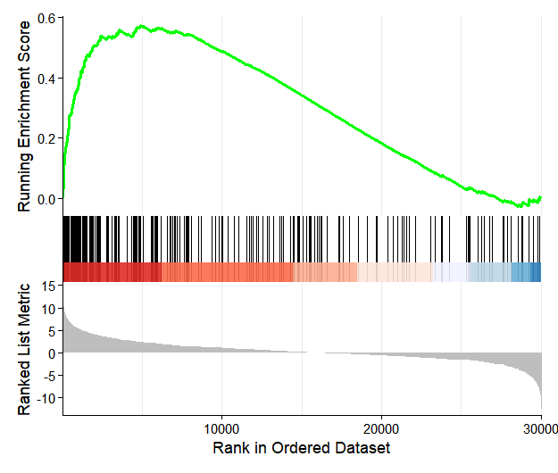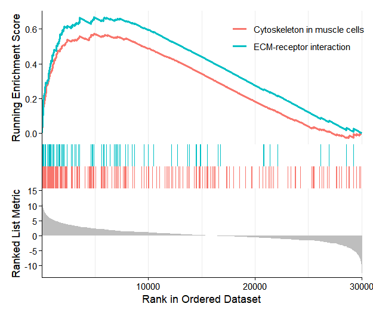
1.9 Pathway and transcription factor activity inference
The omicScope package seamlessly integrates pathway and transcription factor activity inference capabilities from the decoupleR package. This integration enables users to perform activity estimation with a single command, with the resulting activity scores automatically stored in the activityData slot of the omicscope object.
omicScope comes with pre-loaded pathway and transcription factor regulatory network data for both human and mouse organisms, eliminating the need for users to download external databases.
1.9.1 Pathway activity inference
To perform activity inference, use the infer_activity() function and specify the input_type parameter (defining the input data format) and infer_type parameter (specifying pathway or transcription factor inference). The function returns an activityData S4 object containing three slots: netData (prior knowledge network), inputData (gene expression matrix), and resData (estimated activity scores):
os <- infer_activity(os,
input_type = "counts",
infer_type = "pathway",
organism = "mouse",
use_local_netdata = TRUE)
act <- os@activityData
str(act)
# Formal class 'activitydata' [package "omicScope"] with 5 slots
# ..@ inferType: chr "pathway"
# ..@ netData : tibble [7,000 × 4] (S3: tbl_df/tbl/data.frame)
# .. ..$ source : chr [1:7000] "Androgen" "Androgen" "Androgen" "Androgen" ...
# .. ..$ target : chr [1:7000] "Tmprss2" "Nkx3-1" "Mboat2" "Sarg" ...
# .. ..$ weight : num [1:7000] 11.49 10.62 10.47 11.39 7.36 ...
# .. ..$ p_value: num [1:7000] 2.38e-47 2.21e-44 4.63e-44 2.79e-40 1.25e-39 ...
# ..@ inputData: num [1:39732, 1:6] 0 0.596 0 0.137 0 ...
# .. ..- attr(*, "dimnames")=List of 2
# .. .. ..$ : chr [1:39732] "4933401J01Rik" "Xkr4" "Gm18956" "Gm37180" ...
# .. .. ..$ : chr [1:6] "day0-rep1" "day0-rep2" "day4-rep1" "day4-rep2" ...
# ..@ diffData :'data.frame': 0 obs. of 0 variables
# ..@ resData : tibble [84 × 6] (S3: tbl_df/tbl/data.frame)
# .. ..$ run_id : num [1:84] 1 1 1 1 1 1 1 1 1 1 ...
# .. ..$ statistic: chr [1:84] "mlm" "mlm" "mlm" "mlm" ...
# .. ..$ source : chr [1:84] "Androgen" "EGFR" "Estrogen" "Hypoxia" ...
# .. ..$ condition: chr [1:84] "day0-rep1" "day0-rep1" "day0-rep1" "day0-rep1" ...
# .. ..$ score : num [1:84] 0.759 -0.253 0.399 1.19 -0.244 ...
# .. ..$ p_value : num [1:84] 0.448 0.8 0.69 0.234 0.807 ...Visualize the results using the activity_plot() function:
activity_plot(os)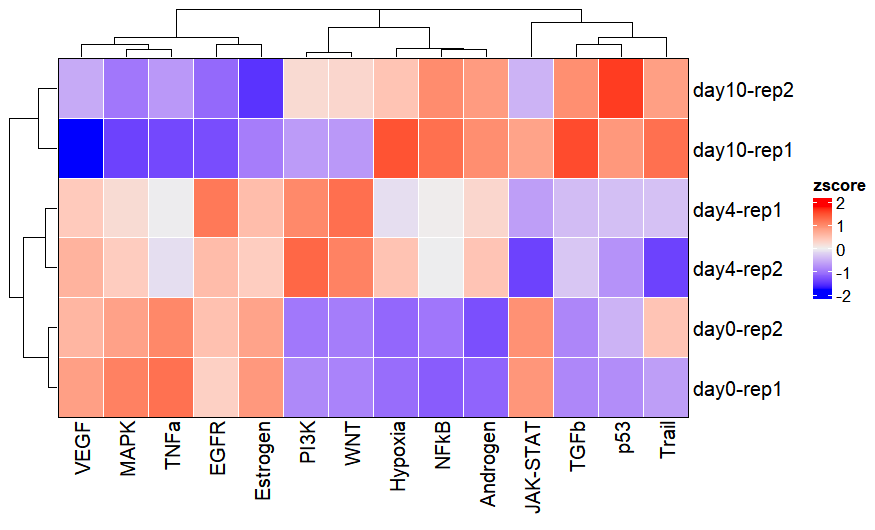
Activity inference can also be conducted using differential expression analysis results. To do this, provide the diffdata object from differential expression analysis to the diff_data_obj parameter:
os <- infer_activity(os,
input_type = "diff_data",
diff_data_obj = os@diffExpData$deseq2$treat_vs_control,
infer_type = "pathway",
organism = "mouse",
use_local_netdata = TRUE)
# [2025-10-10 19:58:28] [TRACE] [OmnipathR] Reading JSON from `C:\Users\JUNZHA~1\AppData\Local\Temp\RtmpeWbOhe/cache.json` (encoding: UTF-8).
# [2025-10-10 19:58:28] [TRACE] [OmnipathR] JSON validation successful: TRUE
activity_plot(os)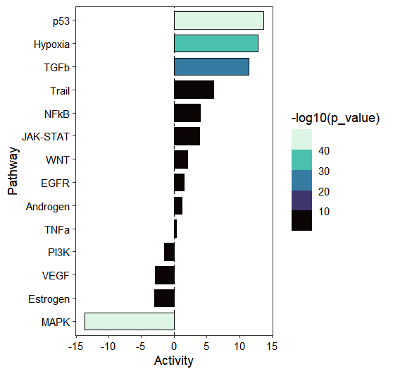
To gain deeper insights into pathway activation, we can visualize the individual gene contributions within the pathway. The pathway demonstrates clear activation patterns: target genes with positive regulatory weights predominantly exhibit positive t-values (1st quadrant), while genes with negative weights largely show negative t-values (3rd quadrant), indicating concordant regulation:
activity_plot(os, target_pathway = c("p53","MAPK"))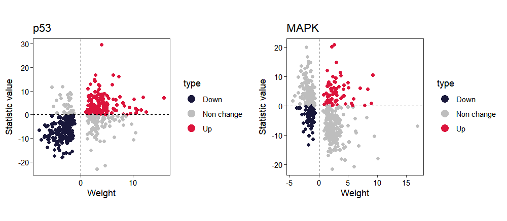
1.9.2 Transcription factor activity inference
Transcription factor activity can be inferred by setting the infer_type parameter to “tf”. Users can select from various statistical methods using the statistics parameter (consult the official decoupleR documentation for a comprehensive list of available methods). When visualizing results with activity_plot(), the top_tf parameter controls the number of top-ranked transcription factors displayed (default: 20):
os <- infer_activity(os,
input_type = "counts",
infer_type = "tf",
organism = "mouse",
statistics = "ulm",
use_local_netdata = TRUE)
# [2025-10-10 20:20:26] [TRACE] [OmnipathR] Reading JSON from `C:\Users\JUNZHA~1\AppData\Local\Temp\RtmpeWbOhe/cache.json` (encoding: UTF-8).
# [2025-10-10 20:20:26] [TRACE] [OmnipathR] JSON validation successful: TRUE
activity_plot(os, top_tf = 40)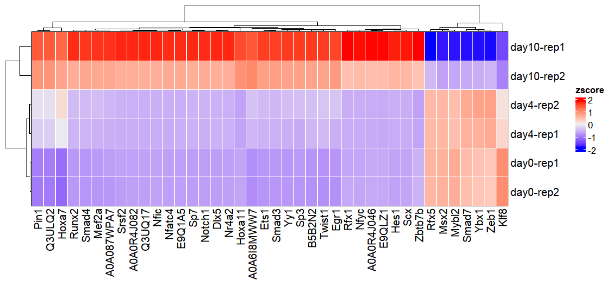
Differential expression analysis results provide another input option for transcription factor activity inference. By specifying a transcription factor of interest using the target_tf parameter in activity_plot(), users can examine the expression patterns of its regulated target genes:
os <- infer_activity(os,
input_type = "diff_data",
diff_data_obj = os@diffExpData$deseq2$treat_vs_control,
infer_type = "tf",
organism = "mouse",
statistics = "ulm",
use_local_netdata = TRUE)
# [2025-10-10 20:26:16] [TRACE] [OmnipathR] Reading JSON from `C:\Users\JUNZHA~1\AppData\Local\Temp\RtmpeWbOhe/cache.json` (encoding: UTF-8).
# [2025-10-10 20:26:16] [TRACE] [OmnipathR] JSON validation successful: TRUE
activity_plot(os, target_tf = c("Pou5f1","Mef2a"))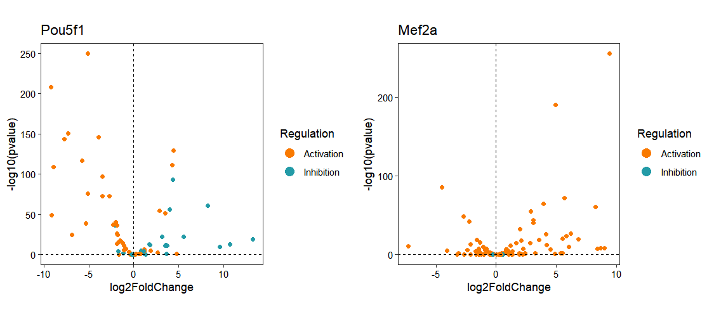